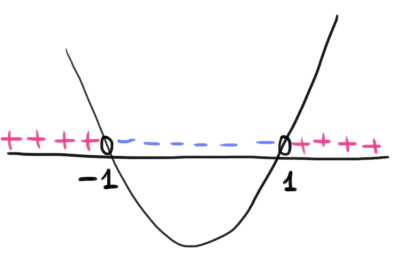

\[
f(x) = \dfrac{3x^2 + 3}{x}
\]
Dominio
La funzione è definita se il denominatore della frazione è diverso da \(0\), quindi il dominio è \[ D = (-\infty\,,\,\,0) \cup (0\,,\,\,+\infty) \] Segno
Studiamo per quali valori \(x \in D\) si ha \(f(x) \gt 0\), ovvero \[ \dfrac{3x^2 + 3}{x} \gt 0 \] Osserviamo che il numeratore è sempre positivo in quanto somma tra la quantità positiva o nulla \(3x^2\) e \(3\). Allora la frazione è positiva se il denominatore è positivo \[ \dfrac{3x^2 + 3}{x} \gt 0 \,\,\Leftrightarrow\,\, x \gt 0 \]
La funzione è
Comportamento in prossimità degli estremi del dominio - ricerca asintoti
Ricordiamo che il dominio è \(D = (-\infty\,,\,\,0) \cup (0\,,\,\,+\infty)\). Calcoliamo quindi i limiti per \[ x \to -\infty \quad x \to 0^{\pm} \quad x \to +\infty \] \(\boxed{\boldsymbol{x \to -\infty}}\) \[ \begin{align*} \lim_{x \to -\infty} \dfrac{3x^2 + 3}{x} &= \lim_{x \to -\infty} \dfrac{3x^2}{x} \\\\ &= \lim_{x \to -\infty} \dfrac{3x^\cancel{2}}{\cancel{x}} \\\\ &= \lim_{x \to -\infty} 3x = -\infty \end{align*} \] La funzione potrebbe avere un asintoto obliquo. Verifichiamolo \[ \begin{align*} \lim_{x \to -\infty} \dfrac{f(x)}{x} &= \lim_{x \to -\infty} \dfrac{\dfrac{3x^2 + 3}{x}}{x} \\\\ &= \lim_{x \to -\infty} \dfrac{1}{x}\,\,\dfrac{3x^2 + 3}{x} \\\\ &= \lim_{x \to -\infty} \dfrac{3x^2 + 3}{x^2} \\\\ &= \lim_{x \to -\infty} \dfrac{3x^2}{x^2} = 3 \end{align*} \] Effettivamente esiste un asintoto obliquo, avente coefficiente angolare \(m = 3\). Individuiamo il termine noto \[ \begin{align*} \lim_{x \to -\infty} f(x) - mx &= \lim_{x \to -\infty} \dfrac{3x^2 + 3}{x} - 3x \\\\ &= \lim_{x \to -\infty} \dfrac{3x^2 + 3- 3x^2}{x} \\\\ &= \lim_{x \to -\infty} \dfrac{3}{x} = \dfrac{1}{-\infty} = 0 \end{align*} \] Quindi l'asintoto obliquo per \(x \to -\infty\) è la retta di equazione \(y = 3x\)
\(\boxed{\boldsymbol{x \to +\infty}}\)
Con calcoli del tutto analoghi otteniamo l'asintoto per \(x \to +\infty\).
\(\boxed{\boldsymbol{x \to 0^{\pm}}}\) \[ \begin{align*} \lim_{x \to 0} \dfrac{3x^2 + 3}{x} &= \dfrac{3}{0} = \infty \end{align*} \] Concludiamo che \(x = 0\) è un asintoto vertiale per la funzione.
Continuità
La funzione è continua in tutto il suo dominio, poiché rapporto tra funzioni continue. \[ C = D = (-\infty\,,\,\,0) \cup (0\,,\,\,+\infty) \] Derivabilità
Calcoliamo la derivata della funzione \[ \begin{align*} \Big[\dfrac{3x^2 + 3}{x} \Big]' &= \dfrac{6x \cdot x - (3x^2 + 3) \cdot 1}{x^2} \\\\ &= \dfrac{3x^2 - 3}{x^2} \end{align*} \] La derivata della funzione è \[ f'(x) = \dfrac{3x^2 - 3}{x^2} \] ed è definita su tutto \(C\). \[ D' = C = D = (-\infty\,,\,\,0) \cup (0\,,\,\,+\infty) \] Studio intervalli di monotonia
Studiamo per quali valori di \(x \in D\) si ha \(f'(x) \gt 0\). \[ \begin{align*} \dfrac{3x^2 - 3}{\underset{+}{\underbrace{x^2}}} \gt 0 \,\,\,\Leftrightarrow\,\,\, 3x^2 - 3 \gt 0 \end{align*} \] Usiamo il metodo della parabola. Risolviamo l'equazione associata \[ \begin{align*} &3x^2 - 3 = 0 \\\\ &x = \pm1 \end{align*} \]
Realizziamo lo schema di monotonia
.png)
La funzione è
Studio della concavità
Calcoliamo la derivata seconda \[ \begin{align*} f''(x) &= \Big[\dfrac{3x^2 - 3}{x^2}\Big]' \\\\ &= \dfrac{6x \cdot x^2 - (3x^2 -3) \cdot 2x}{(x^2)^2} \\\\ &= \dfrac{6x^3 -6x^3 +6x}{x^4} \\\\ &= \dfrac{6\cancel{x}}{x^\cancel{4}3} \\\\ &= \dfrac{6}{x^3} \end{align*} \] Studiamo il segno della derivata seconda \[ \begin{align*} f''(x) \gt 0 \\\\ \dfrac{6}{x^3} \gt 0 \\\\ x^3 \gt 0 \\\\ x \gt 0 \end{align*} \] Scriviamo lo schema di concavità
.png)
Grafico
Riassumiamo in un grafico le informazioni ottenute fino a questo momento
La funzione è definita se il denominatore della frazione è diverso da \(0\), quindi il dominio è \[ D = (-\infty\,,\,\,0) \cup (0\,,\,\,+\infty) \] Segno
Studiamo per quali valori \(x \in D\) si ha \(f(x) \gt 0\), ovvero \[ \dfrac{3x^2 + 3}{x} \gt 0 \] Osserviamo che il numeratore è sempre positivo in quanto somma tra la quantità positiva o nulla \(3x^2\) e \(3\). Allora la frazione è positiva se il denominatore è positivo \[ \dfrac{3x^2 + 3}{x} \gt 0 \,\,\Leftrightarrow\,\, x \gt 0 \]
La funzione è
- positiva per \(x \in (0\,,\,\,+\infty)\)
- negativa per \(x \in (-2\,,\,\,2)\)
Comportamento in prossimità degli estremi del dominio - ricerca asintoti
Ricordiamo che il dominio è \(D = (-\infty\,,\,\,0) \cup (0\,,\,\,+\infty)\). Calcoliamo quindi i limiti per \[ x \to -\infty \quad x \to 0^{\pm} \quad x \to +\infty \] \(\boxed{\boldsymbol{x \to -\infty}}\) \[ \begin{align*} \lim_{x \to -\infty} \dfrac{3x^2 + 3}{x} &= \lim_{x \to -\infty} \dfrac{3x^2}{x} \\\\ &= \lim_{x \to -\infty} \dfrac{3x^\cancel{2}}{\cancel{x}} \\\\ &= \lim_{x \to -\infty} 3x = -\infty \end{align*} \] La funzione potrebbe avere un asintoto obliquo. Verifichiamolo \[ \begin{align*} \lim_{x \to -\infty} \dfrac{f(x)}{x} &= \lim_{x \to -\infty} \dfrac{\dfrac{3x^2 + 3}{x}}{x} \\\\ &= \lim_{x \to -\infty} \dfrac{1}{x}\,\,\dfrac{3x^2 + 3}{x} \\\\ &= \lim_{x \to -\infty} \dfrac{3x^2 + 3}{x^2} \\\\ &= \lim_{x \to -\infty} \dfrac{3x^2}{x^2} = 3 \end{align*} \] Effettivamente esiste un asintoto obliquo, avente coefficiente angolare \(m = 3\). Individuiamo il termine noto \[ \begin{align*} \lim_{x \to -\infty} f(x) - mx &= \lim_{x \to -\infty} \dfrac{3x^2 + 3}{x} - 3x \\\\ &= \lim_{x \to -\infty} \dfrac{3x^2 + 3- 3x^2}{x} \\\\ &= \lim_{x \to -\infty} \dfrac{3}{x} = \dfrac{1}{-\infty} = 0 \end{align*} \] Quindi l'asintoto obliquo per \(x \to -\infty\) è la retta di equazione \(y = 3x\)
\(\boxed{\boldsymbol{x \to +\infty}}\)
Con calcoli del tutto analoghi otteniamo l'asintoto per \(x \to +\infty\).
\(\boxed{\boldsymbol{x \to 0^{\pm}}}\) \[ \begin{align*} \lim_{x \to 0} \dfrac{3x^2 + 3}{x} &= \dfrac{3}{0} = \infty \end{align*} \] Concludiamo che \(x = 0\) è un asintoto vertiale per la funzione.
Continuità
La funzione è continua in tutto il suo dominio, poiché rapporto tra funzioni continue. \[ C = D = (-\infty\,,\,\,0) \cup (0\,,\,\,+\infty) \] Derivabilità
Calcoliamo la derivata della funzione \[ \begin{align*} \Big[\dfrac{3x^2 + 3}{x} \Big]' &= \dfrac{6x \cdot x - (3x^2 + 3) \cdot 1}{x^2} \\\\ &= \dfrac{3x^2 - 3}{x^2} \end{align*} \] La derivata della funzione è \[ f'(x) = \dfrac{3x^2 - 3}{x^2} \] ed è definita su tutto \(C\). \[ D' = C = D = (-\infty\,,\,\,0) \cup (0\,,\,\,+\infty) \] Studio intervalli di monotonia
Studiamo per quali valori di \(x \in D\) si ha \(f'(x) \gt 0\). \[ \begin{align*} \dfrac{3x^2 - 3}{\underset{+}{\underbrace{x^2}}} \gt 0 \,\,\,\Leftrightarrow\,\,\, 3x^2 - 3 \gt 0 \end{align*} \] Usiamo il metodo della parabola. Risolviamo l'equazione associata \[ \begin{align*} &3x^2 - 3 = 0 \\\\ &x = \pm1 \end{align*} \]

Realizziamo lo schema di monotonia
La funzione è
- crescente negli intervalli \((-\infty\,,\,\, -1)\) e\((2\,,\,\,+\infty)\)
- decrescente negli intervalli \((-1\,,\,\, 0)\) e \((0\,,\,\,1)\)
- ha un massimo relativo in \(x = -1\)
- ha un minimo relativo in \(x = 1\)
Studio della concavità
Calcoliamo la derivata seconda \[ \begin{align*} f''(x) &= \Big[\dfrac{3x^2 - 3}{x^2}\Big]' \\\\ &= \dfrac{6x \cdot x^2 - (3x^2 -3) \cdot 2x}{(x^2)^2} \\\\ &= \dfrac{6x^3 -6x^3 +6x}{x^4} \\\\ &= \dfrac{6\cancel{x}}{x^\cancel{4}3} \\\\ &= \dfrac{6}{x^3} \end{align*} \] Studiamo il segno della derivata seconda \[ \begin{align*} f''(x) \gt 0 \\\\ \dfrac{6}{x^3} \gt 0 \\\\ x^3 \gt 0 \\\\ x \gt 0 \end{align*} \] Scriviamo lo schema di concavità
Grafico
Riassumiamo in un grafico le informazioni ottenute fino a questo momento
.png)